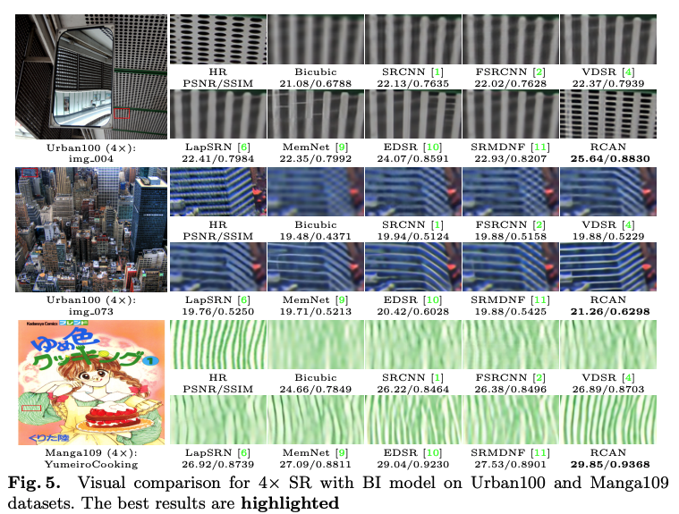

<!DOCTYPE html>
<html lang="en">
<head>
	<meta charset="utf-8">
	<title>RCAN paper review - Hello, world! I'm David Freeman</title>

  <!-- Edit site and author settings in `_config.yml` to make the social details your own -->

    <meta content="Hello, world! I'm David Freeman" property="og:site_name">
  
    <meta content="RCAN paper review" property="og:title">
  
  
    <meta content="article" property="og:type">
  
  
    <meta content="Write an awesome description for your new site here. You can edit this line in _config.yml. It will appear in your document head meta (for Google search results) and in your feed.xml site description.
" property="og:description">
  
  
    <meta content="http://localhost:4000/RCAN/" property="og:url">
  
  
    <meta content="2020-05-14T19:32:20+09:00" property="article:published_time">
    <meta content="http://localhost:4000/about/" property="article:author">
  
  
    <meta content="http://localhost:4000/assets/img/RCAN.png" property="og:image">
  
  
    
  
  
    
  

    <meta name="twitter:card" content="summary">
    <meta name="twitter:site" content="@">
    <meta name="twitter:creator" content="@">
  
    <meta name="twitter:title" content="RCAN paper review">
  
  
    <meta name="twitter:url" content="http://localhost:4000/RCAN/">
  
  
    <meta name="twitter:description" content="Write an awesome description for your new site here. You can edit this line in _config.yml. It will appear in your document head meta (for Google search results) and in your feed.xml site description.
">
  
  
    <meta name="twitter:image:src" content="http://localhost:4000/assets/img/RCAN.png">
  

	<meta name="description" content="">
	<meta http-equiv="X-UA-Compatible" content="IE=edge">
	<meta name="viewport" content="width=device-width, initial-scale=1, maximum-scale=1">
	<meta property="og:image" content="">
	<link rel="shortcut icon" href="/assets/img/favicon/favicon.ico" type="image/x-icon">
	<link rel="apple-touch-icon" href="/assets/img/favicon/apple-touch-icon.png">
	<link rel="apple-touch-icon" sizes="72x72" href="/assets/img/favicon/apple-touch-icon-72x72.png">
	<link rel="apple-touch-icon" sizes="144x144" href="/assets/img/favicon/apple-touch-icon-144x144.png">
	<!-- Chrome, Firefox OS and Opera -->
	<meta name="theme-color" content="#263959">
	<!-- Windows Phone -->
	<meta name="msapplication-navbutton-color" content="#263959">
	<!-- iOS Safari -->
	<meta name="apple-mobile-web-app-status-bar-style" content="#263959">
	<!-- Google Fonts -->
	<link href="https://fonts.googleapis.com/css?family=PT+Serif:400,700" rel="stylesheet">
	<link href="https://fonts.googleapis.com/css?family=Lato:300,400,700" rel="stylesheet">
	<!-- Font Awesome -->
	<link rel="stylesheet" href="/assets/fonts/font-awesome/css/font-awesome.min.css">
	<!-- Styles -->
	<link rel="stylesheet" href="/assets/css/main.css">
</head>

<body>

  <div class="wrapper">
    <aside class="sidebar">
  <header>
    <div class="about">
      <div class="cover-author-image">
        <a href="/"></a>
      </div>
      <div class="author-name">Kim Dae-han</div>
      <p>I'm studying/researching about artificial intelligence..</p>
    </div>
  </header> <!-- End Header -->
  <footer>
    <section class="contact">
      <h3 class="contact-title">Contact me</h3>
      <ul>
        
          <li><a href="https://twitter.com/artemsheludko_" target="_blank"><i class="fa fa-twitter" aria-hidden="true"></i></a></li>
        
        
          <li><a href="https://facebook.com/" target="_blank"><i class="fa fa-facebook" aria-hidden="true"></i></a></li>
        
        
          <li class="github"><a href="http://github.com/koreadhkim" target="_blank"><i class="fa fa-github"></i></a></li>
        
        
          <li class="linkedin"><a href="https://in.linkedin.com/" target="_blank"><i class="fa fa-linkedin" aria-hidden="true"></i></a></li>
        
        
          <li class="email"><a href="mailto:eogks1525@gmail.com"><i class="fa fa-envelope-o"></i></a></li>
        
      </ul>
    </section> <!-- End Section Contact -->
    <div class="copyright">
      <p>2020 &copy; Kim Dae-han</p>
    </div>
  </footer> <!-- End Footer -->
</aside> <!-- End Sidebar -->
<div class="content-box clearfix">
  <article class="article-page">
  <div class="page-content">
    
    <div class="page-cover-image">
      <figure>
        
        
      </figure>
    </div> <!-- End Page Cover Image -->
    
    <div class="wrap-content">
      <header class="header-page">
        <h1 class="page-title">RCAN paper review</h1>
        <div class="page-date"><span>2020, May 14&nbsp;&nbsp;&nbsp;&nbsp;</span></div>
      </header>
      <h3 id="-안녕하세요-인공지능-공부연구중인-김대한-이라고-합니다-이번-포스트는-다음의-논문과-연관이-있습니다"><strong> 안녕하세요. 인공지능 공부/연구중인 김대한 이라고 합니다. 이번 포스트는 다음의 논문과 연관이 있습니다.</strong></h3>
<p>https://arxiv.org/pdf/1807.02758.pdf (ECCV 2018)</p>
<hr />

<h2 id="0-abstract">0. Abstract</h2>
<p>SR에서 network 의 deep할수록 좋다.! 라는 것은 VDSR을 통해서 많이 알려져 있습니다. 그러나, 기본적으로 network가 deep할수록 학습이 어려운것은 보편적인 사실입니다. 때문에, 이를 해결하기 위해서 많은 학습기법들이 제안되어 왔습니다. classification과 같은 task는 학습이 비교적 쉽다고 볼 수 있습니다. 그러나, SR task는 학습이 불안정하다.(까다롭다.)라고 볼 수 있습니다. 따라서, 저자는 SR task에서 network가 deep 할수록 train에 어려움을 겪는다고 말하고 있습니다. (제안된 네트워크 관련 논문들은 대부분 제안한 모델을 학습하기 위한 기법을 같이 제안하는식으로 알고 있습니다.) 따라서, 논문은 이러한 문제점을 해결하기 위해서 RCAN을 제안한다고 합니다. very deep network를 구성하기 위해서 Residual in Residual (RIR)을 제안 한다고 합니다. RIR은 몇개의 residual groups으로 구성되며 long skip connection을 갖고 있다고 합니다.
저자는 또한, low-resolution image input 과 feature 에는 channel별로 동등하게 여겨지는 abundant low-frequency information을 포함하고 있기 때문에 CNN 구조의 장점인 representational ability 를 제한한다고 말하고 있습니다.
논문에서는 channel 사이 상호의존성을 고려하여 channel attention mechanism을 제안합니다.<br /></p>

<p>CNN에서 말하는 channel attention mechanism을 쉽게 이해하고 가려면 다음그림을 보시면 될 것 같습니다.</p>

<h2 id="1-introduction">1. Introduction</h2>
<p>다수의 SR논문에서 (eg.SISR) Introduction에서 말하는 내용은 비슷합니다.(제가 읽은 SISR에 한해서)<br />
(1) LR –&gt; HR Task이다.<br />
(2) ill-posed problem이다.<br />
(3) 이러한 issue 를 해결하기 위해 많은 방법이 제안되었다.<br />
(4) (3)에서 말한 많은 방법들에 대한 맛보기.<br />
(5) (4)에서 말한 맛보기에서 issue들을 나열<br /></p>

<hr />

<p>많은 분들이 아시다시피, residual을 의미없이 많이 삽입하고, deep network를 구축한다고 해서 성능이 유의미하게 좋아지는 것은 아닙니다. 정교한 residual이 성능을 유의미하게 향상시킬것입니다. 저자도 유사한 이야기를 하고 있습니다.</p>

<p><strong>issue 01 :</strong> residual 을 의미없이 많이 삽입하고, Deep network를 구축하는 방식<br />
<strong>issue 01-related problem:</strong><br />
(1) parameter increment / a fall in computational efficiency.
(2) (1)에도 불구하고, 성능향상폭은 낮음.</p>

<p><strong>issue 02 :</strong> [1~11] 에서 제안된 논문들은 channelwise features 를 동등하게 다루고 있다.<br />
<strong>issue 02-related problem:</strong><br />
(1) low/high frequency information이 서로 dealing 하는데 있어서 flexibility가 결여된다.<br />
(2) wastes unnecessary computations(low-frequency 관점)<br />
(3) discriminative ability leanring X (channel 관점) –&gt; deep network의 representational power 를 낮춤.</p>

<p><strong>Therefore, proposed RCAN :</strong> residual을 의미있게 가져가면서, channelwise features를 차별성을 두고 다루겠다. 풀어쓰면, 아래와 같습니다.<br />
LR –&gt; Network –&gt; HR 에서, LR은 High-frequency information 보다 low-frequnecy information이 상대적으로 많이 포함되어 있습니다. 그러면, Network는 결국 LR에서 부족한 정보인 high-frequency inforamtion을 restore하는 방향으로 학습될 것 입니다. 그러나, 이때, LR에 포함된 Low-frequency information 도 잃어버리지 않기 위해 residual을 어떻게 쓰느냐에 대한 연구도 많이 있습니다. 저자는 깊은 network에서 low-frequency inforamtion을 compute하는데 많은 낭비를 한다고 말하고 있으며, feature channels을 discriminative 하게 learning 하는 능력이 부족하다고 생각하고 있습니다. 결과적으로, 이러한 문제점들은 HR(output)이 representation하는데 악영향을 미칠 수 있다. 라고 말하고 있습니다.<br /></p>

<p><strong>Approximate RCAN information :</strong> RIR(RG(SSC),LSC)<br />
풀어쓰면 아래와 같습니다. RIR(residual in residual)구조를 제안하며, RIR은 residual group(RG)와 long-skip-connection(LSC)를 포함하고 있다고 합니다. 이때, RG는 short-skip-connection(SSC)를 사용하여, EDSR의 residual block을 쌓는다고 합니다. LSC, SSC가 포함됨으로인해 low-frequency information을 잘 bypass할 수있으며, information flow를 원활하게 가져간다고 하고있습니다.<br /></p>

<p>또한, Issue 02 를 해결하기 위하여 저자는 channel attention(CA) mechanism을 제안합니다. 이는 직관적으로 정답에 근사하기위해, Loss를 줄이기 위해 useful feature를 고르겠다는 것으로 보면 될 것 같습니다.<br /></p>

<p><strong>Overall, our contributions are three-fold:</strong><br />
<strong><u>[1]</u></strong> : 성능 높은 SR을 위하여 RCAN을 제안하며 이는 이전의 제안된 방법들보다 좋은 성능을 보입니다.<br />
<strong><u>[2]</u></strong> : Deep-Network training이 가능한 RIR구조를 제안합니다. RIR내부에 존재하는 SSC/LSC는 network가 low-frequency information을 잘 전달하며, network가 더 효과적인 정보를 training할 수 있도록 도와줍니다.<br />
<strong><u>[3]</u></strong> : CA(channel Atteation) mechanism을 제안하고 CA로 인하여 network의 representational ability 를 향상 시킵니다. <br /></p>

<p>정성적인 성과는 다음과 같다고 말하고 있습니다.<br />
<br /></p>

<h2 id="2-related-work">2. Related Work</h2>
<p><strong>channel attention(CA) :</strong> CA는 high-level vision task에서는 자주 사용되지만, low-level vision task에서는 거의 연구되지 않았다고 합니다. 때문에, 저자는 SR Task의 space limitation에 따라서, CNN-based methods / attention mechanism에 focus 를 맞춥니다.<br /></p>

<p><strong>Predefined upsampling :</strong> 해당 방법은 LR –&gt; HR space 로 mapping한 뒤에, 학습하는 방법입니다. 이는 계산량에 대한 issue도 있을 뿐더러, interpolation으로 인해 얻는 효과는 resolution이 증가하는것 밖에 없으므로 최근에는 해당 방법은 사용되지 않는 것으로 알고 있습니다. 저자도 같은 이야기를 하고 있습니다.</p>

<p><strong>Thinking about Deep Network :</strong> 저자는 EDSR/MDSR을 예시로 설명하고 있고, 물론 기존의 SRResNet구조에서 불필요한 모듈(BN/ReLU)를 제거함으로써 성능향상을 이루었지만, EDSR/MDSR은 다른 network에 비해서 parameter수가 굉장히 많은 편이며, residual block을 깊게만 쌓는 것은 유의미한 방법이 아니다.라고 말하고 있습니다. 그러면서, Introducion에서 말한, Issue 02에 대해서 한번더 부정적인 견해를 말하고 있습니다.</p>

<h3 id="-attention-mechansim-">[ Attention mechansim ]</h3>
<p>일반적으로, Attention mechansim은 성능이 향상하는 쪽으로, bias되는 방향으로 학습하는 방법이라고 생각할 수 있을 것 같습니다.
위에도 말했듯이 저자는 Attention mechansim이 SR Task에 선행연구되지 않았고 이를 적용해서 유의미한 성능향상을 이끌어낸것으로 보입니다. 그러면서, high-frequency feature가 HR reconstruction에 유용하다고 합니다. 이는 당연한 것입니다. 의문을 가질 여지가 없습니다. 그러면서 저자는 network가 이러한(useful feature)에 더 attention한다면 좋은 개선효과를 얻을 수 있을 것이라고 생각하고 있습니다.</p>

<h2 id="3-residual-channel-attention-network-rcan">3. Residual Channel Attention Network (RCAN)</h2>

<h3 id="-network-architecture-">[ Network Architecture ]</h3>
<p><br /></p>
<h4 id="ilr--input">I<sub>LR</sub> = input</h4>
<h4 id="isr--output">I<sub>SR</sub> = output</h4>
<p><br /></p>
<h4 id="hsf--feature-extraction">H<sub>SF</sub> = feature extraction</h4>
<p><br /></p>
<h4 id="f0--deep-feature-extration에-사용됩니다-rir-modeul-의-input이-됩니다">F<sub>0</sub> = deep feature extration에 사용됩니다. RIR modeul 의 input이 됩니다.</h4>
<p><br /></p>
<h4 id="fdf--deep-feature로-간주하고-이는-upscale-module-에-input-입니다">F<sub>DF</sub> = deep feature로 간주하고, 이는 upscale module 에 input 입니다.</h4>
<p><br /></p>
<h4 id="hrec--upscaling--convupscaling--network-architecture와-같이-보시면-쉽게-따라갈-수-있습니다">H<sub>REC</sub> = Upscaling –&gt; Conv(Upscaling),  Network architecture와 같이 보시면 쉽게 따라갈 수 있습니다.</h4>

<h3 id="-loss-function-">[ Loss-function ]</h3>
<p><br /></p>

<p>저자는, 이전의 논문들과 비교하여 RCAN의 효과를 보여주기 위하여 이전의 연구들에서 사용한 방식인 L1-loss를 사용하였다고 합니다.</p>

<h3 id="-residual-in-residual-rir-">[ Residual in Residual (RIR) ]</h3>
<p><br /></p>

<p>EDSR에서 residual block, skip connection을 이용하여 Deep CNN을 설계할 수 있다는 것이 입증됬다고 합니다. 결과적으로, residual 구조로 인하여 400개 이상의 많은 layer를 학습할 수 있게 됩니다.<br />
g-th group 으로 이루어진, RG는 다음과 같이 공식화 된다고 합니다.<br />
<br /></p>
<h4 id="hg--g-th-rg">H<sub>g</sub> = g-th RG</h4>
<h4 id="fg-1--input-for-g-th-rg">F<sub>g-1</sub> = input for g-th RG</h4>
<h4 id="fg--output-for-g-th-rg">F<sub>g</sub> = output for g-th RG</h4>
<p>저자는 simple 하게 RG 만 많이 쌓는다고해서 성능이 좋아지는 것은 확인하지 못하였고, 이를 해결하기 위하여 LSC를 RIR에 추가로 사용합니다. 결과적으로, training을 안정화하면서 성능향상을 이끌어 낼 수 있었다고 합니다.</p>

<p><br /></p>
<h4 id="wlsc--rir-conv-layer-weight-tail--biasx">W<sub>LSC</sub> = RIR conv layer weight (tail) , bias(x)</h4>

<p>결과적으로, RCAB(b-th residual, g-th RG)는 다음과 같이 공식화 될 수 있습니다.
<br /></p>
<h4 id="fgb-1--g-th-rg-에서-b-th-rcab-input">F<sub>g,b-1</sub> = g-th RG 에서 b-th RCAB input</h4>
<h4 id="fgb--g-th-rg-에서-b-th-rcab-output">F<sub>g,b</sub> = g-th RG 에서 b-th RCAB output</h4>
<p>저자는 LR input / fetures 에는 abundant information이 많고, SR network 의 목표는 useful information을 recover 하는 것이다. 라고 말하고 있습니다. abundant information(low-frequency)는 identity-based skip connection으로 전달 된다고합니다. residual lerning을 위해서 B residual channel attention block을 쌓는다고 합니다. 이때, B residual channel attention block은 각각의 RG에 포함된다고 합니다.<br /></p>

<p><br /></p>

<h3 id="-channel-attentionca-">[ Channel Attention(CA) ]</h3>

<p><br /></p>

<p>저자는 feature map 에서 channel 간에 상호의존성을 이용하여 CA를 제안하였습니다.<br />
각 channel 별로 different attention하는 것이 key step 이라고 합니다. 이때, 두가지 concerns가 있습니다.<br /></p>

<p><strong>First :</strong> LR space 는 당연히 abundant low-frequency information, valuable high-frequency componets를 갖습니다. low-frequency part는 more complante하다고 합니다. 그리고 high-frequency componets는  일반적으로, edge, texture, detail information을 갖습니다.<br />
<strong>Second :</strong>각각의 Conv layer 는 local receptive field 를 포함합니다. 따라서, Conv 명령을 수행한 뒤, output은 unable to exploit contextual inforamtion outside of the local region 한 것은 당연한 것 입니다.<br /></p>

<p>저자는 First, Second 에 분석에 기초하여, global average pooling 을 사용하여 channel-wise global spatial information을 가져온다고 합니다.<br /></p>

<p>GAP (global average pooling)은 HxW pooling 이라고 생각하시면 될 것 같습니다. 즉, 한 feature map (HxWxC)를 전부 pooling 하여 하나의 neuron(1x1xC)로 mapping 하는 것 입니다.
여기서 GAP 이후에 softmax를 취하면, 각 feature map 의 중요도(?)가 계산될 수 있을것이라고 예상이 됩니다.<br /></p>

<p><br /></p>

<h4 id="x--x1-xc-xc-c--feature-map">X = [x1, …,x<sub>c</sub>,… x<sub>C</sub>], C = feature map</h4>
<h4 id="hgp-gp--global-pooling">H<sub>GP</sub>, GP = Global pooling</h4>
<h4 id="zc-channel-statistic-local-descriptors">Z<sub>c</sub>, Channel statistic (local descriptors)</h4>
<p>더 정교한 방법이 도입될 수 있다고 말하고 있습니다. <br /></p>

<p>이제, GAP를 통해서 aggregate 된 정보로 부터 channel-sise dependency를 알기 위해서 Gating mechanism을 소개한다고 합니다.<br />
Gating mechanism을 적용하기 위해서는 2가지의 기준이 만족되어야 한다고 합니다. 다음과 같습니다. <br />
<strong>First :</strong> channel 사이의 nonlinear interaction을 learning할 수 있어야 합니다.<br />
<strong>Second :</strong> Ont-hot activation 같이 하나만 강조하는 것이 아닌 각각의 중요도를 나타낼수 있어야 한다.<br /></p>

<p>저자는, First, Second를 따라서, sigmoid function을 사용합니다.
<br /></p>

<h4 id="where-f--and-δ--denote-the-sigmoid-gating-and-relu-34-function-respectively-wd-is-the-weight-set-of-a-conv-layer-which-acts-as-channel-downscaling-with-reduction-ratio-r-after-being-activated-by-relu-the-low-dimension-signal-is-then-increased-with-ratio-r-by-a-channel-upscaling-layer-whose-weight-set-is-wu--then-we-obtain-the-final-channel-statistics-s-which-is-used-to-rescale-the-input-xc-입니다원문내용-">where f (·) and δ (·) denote the sigmoid gating and ReLU [34] function, respectively. WD is the weight set of a Conv layer, which acts as channel-downscaling with reduction ratio r. After being activated by ReLU, the low-dimension signal is then increased with ratio r by a channel-upscaling layer, whose weight set is WU . Then we obtain the final channel statistics s, which is used to rescale the input xc 입니다.(원문내용) <br /></h4>
<p>간단하게, input x<sub>c</sub>을 받아서, ReLU를 취한 뒤, W<sub>U</sub>만큼, upscaling 을 합니다. (weight scaling) 그 뒤, Sigmoid function을 사용하여, rescaling 된 input x<sub>c</sub>를 얻어냅니다. rescaling 된  x<sub>c</sub> = s 입니다.<br />
<br />
위의 식을 보시면 결과적으로, 좌항에 있는것은, feature map 에서 중요도를 계산하여 rescaling 해준 것이 될 것같습니다. channel attention을 사용함으로써, RCAB에서 residual 부분이 adaptively 하게 rescaling 된다고 합니다. 결과적으로 아래의 그림과 같은 상황에 될 것 같습니다.</p>

<p><br />
<br /></p>

<h3 id="-residual-channel-attention-block-rcab-">[ Residual Channel Attention Block (RCAB) ]</h3>
<p><br />
CA를 RCAB에 삽입했다. 라고 보시면 될 것 같습니다. 위의 그림이 정확하게 설명해주고 있습니다.</p>

<h2 id="4-experiments">4. Experiments</h2>

<h3 id="-experiment-preveiw-">[ Experiment preveiw ]</h3>

<p>training dataset = DIV2K<br />
benchmark = Set5, Set14, B100, Urban100, Manga109<br />
이전 network와 동등비교 하기 위하여 Y(luminance) channel 에서 만 evaluation 합니다. <br /></p>

<p>BD : Gaussian blur –&gt; Down scaling</p>

<p>Training settings : 90,180,270 rotation, horizontal flip<br />
patch size : 48x48<br />
batch size : 16<br /></p>

<p>optimizer : Adam<br />
hardware : NVIDIA Titan Xp<br /></p>

<h3 id="-experiment-effects-of-rir-and-ca-">[ Experiment Effects of RIR and CA ]</h3>

<p><br /></p>

<p>위의 Table 이 실험 결과입니다. 흠… 사실 조금 아쉽습니다. CA를 정교하게 하지 않아서 인지, 아니면 다른 이유인지.. 저자가 말한것 만큼 깊은 네트워크에서 LSC,SSC가 성능에 많은 변화를 주지는 못하는 것으로 보입니다. 철저히 개인적인 생각입니다. 그러나, training 불안정성을 해결하고, converge speed가 빠른 것은 당연한 사실일것입니다. 0.45 db의 성능변화 폭이 낮다. 라는 말은 결코 아닙니다. 그러나, 해당 논문에서 parameter 수가 극악입니다. SR에서 많다고 보는 EDSR보다 3배가 많습니다. 이 수치는 multi scale이 가능한 MDSR 보다 많습니다…<br /> (다시한번 말씀드리지만, 철저히 개인적인 의견입니다.)</p>

<h3 id="-experiment-results-with-bicubic-bi-degradation-model-">[ Experiment Results with Bicubic (BI) Degradation Model ]</h3>
<p><br /></p>

<h3 id="-experiment-object-recognition-performance-">[ Experiment Object Recognition Performance ]</h3>
<p><br />
Object Recognition 에서 preprocessing 에서도 기존의 방법들 보다 좋은 성능을 보인다. 라고 말하고 있습니다.<br /></p>

<h3 id="-experiment-benchmark-">[ Experiment benchmark ]</h3>

<p><br /></p>

<h3 id="-experiment-visualize-">[ Experiment visualize ]</h3>

<p><br /></p>

      <div class="page-footer">
        <div class="page-share">
          <a href="https://twitter.com/intent/tweet?text=RCAN paper review&url=http://localhost:4000/RCAN/" title="Share on Twitter" rel="nofollow" target="_blank">Twitter</a>
          <a href="https://facebook.com/sharer.php?u=http://localhost:4000/RCAN/" title="Share on Facebook" rel="nofollow" target="_blank">Facebook</a>
          <a href="https://plus.google.com/share?url=http://localhost:4000/RCAN/" title="Share on Google+" rel="nofollow" target="_blank">Google+</a>
        </div>
        <div class="page-tag">
          
        </div>
      </div>
      <section class="comment-area">
  <div class="comment-wrapper">
    
    <div id="disqus_thread" class="article-comments"></div>
    <script>
      (function() {
          var d = document, s = d.createElement('script');
          s.src = '//mr-brown.disqus.com/embed.js';
          s.setAttribute('data-timestamp', +new Date());
          (d.head || d.body).appendChild(s);
      })();
    </script>
    <noscript>Please enable JavaScript to view the <a href="https://disqus.com/?ref_noscript">comments powered by Disqus.</a></noscript>
    
  </div>
</section> <!-- End Comment Area -->

    </div> <!-- End Wrap Content -->
  </div> <!-- End Page Content -->
</article> <!-- End Article Page -->

</div>

  </div>
  
  <script>
  (function(i,s,o,g,r,a,m){i['GoogleAnalyticsObject']=r;i[r]=i[r]||function(){
  (i[r].q=i[r].q||[]).push(arguments)},i[r].l=1*new Date();a=s.createElement(o),
  m=s.getElementsByTagName(o)[0];a.async=1;a.src=g;m.parentNode.insertBefore(a,m)
  })(window,document,'script','https://www.google-analytics.com/analytics.js','ga');
  ga('create', '', 'auto');
  ga('send', 'pageview');
</script> <!-- End Analytics -->

</body>
</html>
